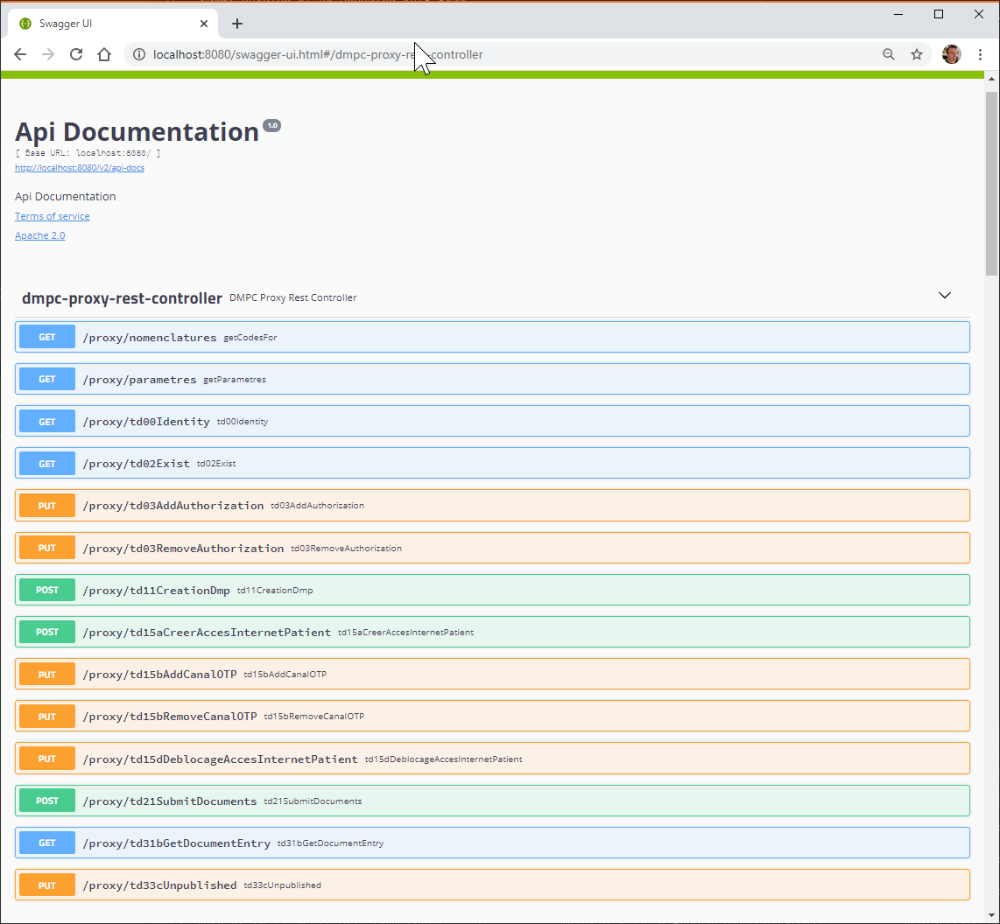

La DMPC-API en mode REST
le proxy REST est un programme java qui reçoit les requetes simples et les retransmet au DMP dans le bon formalisme et dans le respect des différentes transactions, il interprète les réponses du serveur DMP et les retourne au client initial dans un formalisme simplifié.
Commencer avec la DMPC-API en mode PROXY REST
Nous avons mis en place une plateforme de démonstration, vous permettant d’expérimenter tout de suite la dmpc-api. Elle permet d’accéder à l’environnement de test du DMP et d’exécuter l’ensemble des transactions possibles en authentification indirecte.
https://dmpc-demo.devbox-sante.fr/swagger-ui.html
Vous pouvez également exécuter les requetes de la collection Postman
N’hésitez pas à nous demander des identifiants de connexion : Contactez-nous
Le lancer dans votre environnement de développement
Pour démarrer le serveur, depuis une ligne de commande exécuter :
$> java -Dspring.config.location=application.yml -jar dmpc-proxy-rest.jar
Au lancement du serveur est chargé un fichier de configuration application.yml permettant de charger différents KeyStore les informations concernant le LPS et le serveur DMP. Il est initialisé par défaut sur un environnement de test.
Une fois démarré, le serveur est accessible à l’url suivante : http://127.0.0.1:8080/proxy
Pour obtenir, le schéma Swagger : http://127.0.0.1:8080/swagger-ui.html
